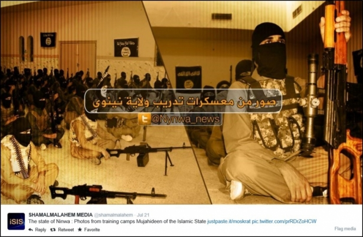

Whistleblowers
Privacy, Security and Secrecy of Communication
Hello There
We…
|
|
|


You…?
Introduction
What are we (not) going to learn?
What are we (not) going to do?
What are the (un)expected results?
Landscape
Snowden revelations
Legislation
Software
Individual & systemic solutions. Luddism
Why you?
You never know when you will be put in the situation that forces you to fight
You don't have to fight with NSA and reveal super-secret practices like Snowden to be a whistleblower
My story: Radiofonia vs Universities
?
Privacy & anonymity
Privacy?
No common sense?
Privacy is an ecological problem
Linked to intimacy, human dignity
"I've got nothing to hide"
"Give me your facebook password"
"I've got nothing to hide"
"What about the future?
It is about power
as restrictive to (negative) freedom
Knowledge is Power
Privacy is Freedom
Power Balance
Surveillance and Sousveillance
Anonymity?
Being just like everyone else?
Anonymity as a commons?
(that's why you should support Tor)
Metadata?
Metadata doesn't lie
What you can get from graph, phone records, bank history
Bellingcat vs. ISIS
Bellingcat vs. ISIS
Bellingcat vs. ISIS
Bellingcat vs. ISIS
Tracking
Web 2.0 - Lightbeam
Remedies: Ghostery, NoScript
Tracking
Phones and Apps
Tracking
Phones are evil
Surveillance: passive
Facebook, Google, etc
State data retention
Surveillance: aggresive
(criminal or sometimes corporate)
State
Human factor
We will talk a lot about technology but please remember that at the very end it is about communicating with humans
Snowden - GPG - unable to send
Assange rape case
Wprost leak
Phisycal/psychological pressure
Psychological barriers
Language you use can reveal your fingerprint
Break :)
Sketching information leaks
explained: Interception, Injection, Recording, Man in the Middle
Tor
Use case 1
How to securely communicate with peers?
Chatting: Crypto Cat
https://crypto.cat
(also jabber client with OTR plugin)
Calling: Red Phone
Open Whisper Systems
https://whispersystems.org/
Chatting: TextSecure
Open Whisper Systems
https://whispersystems.org/
GPG
(aka PGP)
OS X: GPG Suite
Windows: GPG4Win
Thunderbird: Enigmail
Audio/Video – Skype (unfortunately)
There are some alternatives...
Jitsi
https://jitsi.org
Tox
https://tox.im
File sharing
Own hosting
BitTorrent Sync
MEGA
Use case 2
How to securely store the data
Forensics
Disk Encryption
Built in
TrueCrypt (https://truecrypt.ch)
Mat
https://mat.boum.org/
Magic Lantern (http://www.magiclantern.fm/)
Use case 3
How not to get attacked
0-days or why your antivirus is meaningless
FinFisher
(courtesy of Gamma International)
Attachments (targetted phishing)
USB keys
Just to remind you
Phones are evil
Use case 4
How to leak to journalists
Go analog?
Meet/snail mail
but.. physical surveillance
(face, car plates recognition)